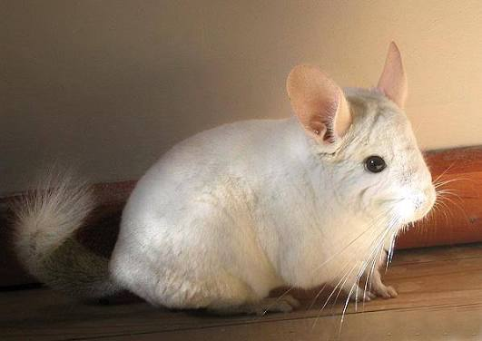

Name
婷 · Ting
大家都叫我「婷」～個性真誠隨和，初次見面或許有些安靜靦腆，但熟識之後是個開朗健談、樂於傾聽與分享日常的朋友。喜歡用心感受生活中的微小確幸，相信平淡的日常中也藏著最溫暖的治癒力！

歡迎來到我的個人小天地！目前就讀於台南應用科技大學。平時喜歡沉浸在音樂的旋律中，也熱愛騎著車迎風出發感受生活。這裡記錄了我的個人檔案與超療癒的毛茸茸龍貓夥伴！
大家都叫我「婷」～個性真誠隨和，初次見面或許有些安靜靦腆，但熟識之後是個開朗健談、樂於傾聽與分享日常的朋友。喜歡用心感受生活中的微小確幸，相信平淡的日常中也藏著最溫暖的治癒力！
標準的摩羯特質——認真負責、做事踏實且自律。外表看似冷靜獨立，內心其實有一座充滿人情味的溫暖小宇宙；面對在乎的人十分溫柔護短，對喜愛的事物會默默耕耘、全力以赴，是身邊最安心可靠的夥伴。
Tainan University of Technology。在南應大充實度過每一天，享受台南豐富的文化底蘊、美食與微風，在課堂與創作實踐中不斷累積專業與成長。
戴上耳機沉浸在動人旋律中放鬆心靈；也享受騎上車迎風前行的速度感，在城市的街道巷弄裡尋找專屬的生活靈感與自由。
移動小龍貓，接住美味堅果 🌰、草莓 🍓 與幸運星 ⭐，避開刺刺烏雲 ⚡！
點擊圖片可放大欣賞高畫質萌照！
擁有極致蓬鬆柔軟的毛髮，圓滾滾的身形就像宮崎駿動畫裡的真實版龍貓，無辜的大眼睛看一眼心都融化了！
宮崎駿經典動畫《龍貓》中隱身在森林草叢裡的白色精靈小龍貓，充滿童趣與奇幻想像！（點擊可以摸摸它喔）